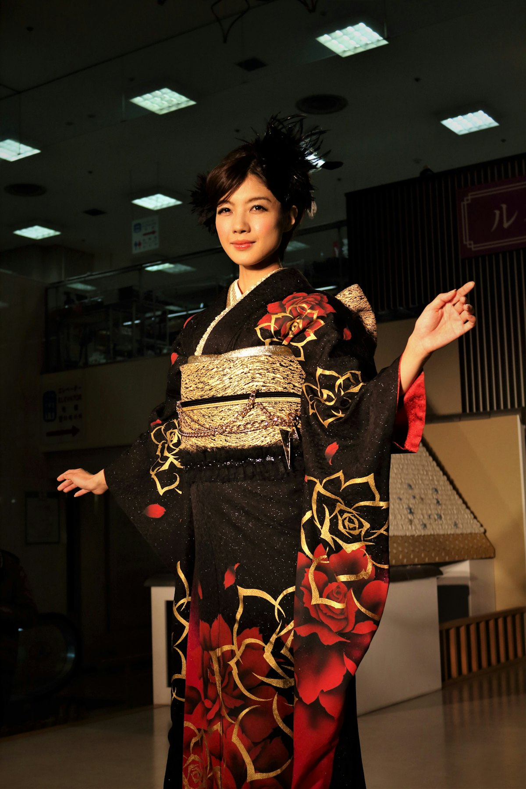
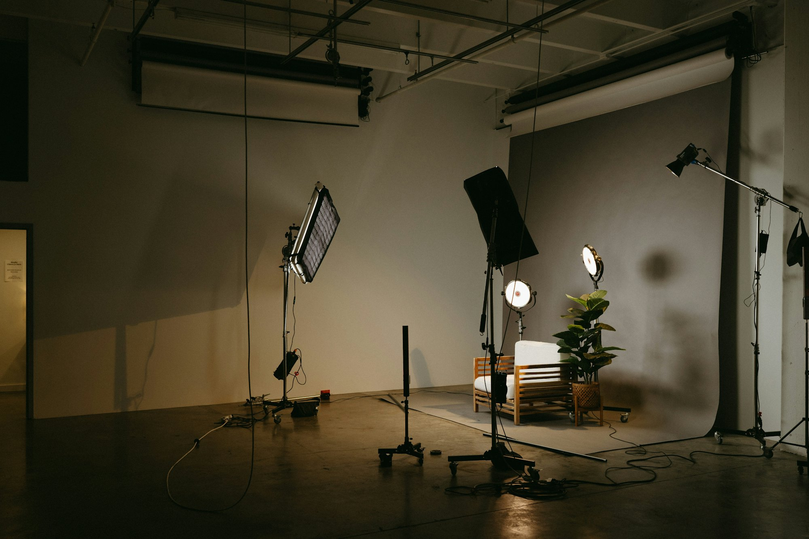
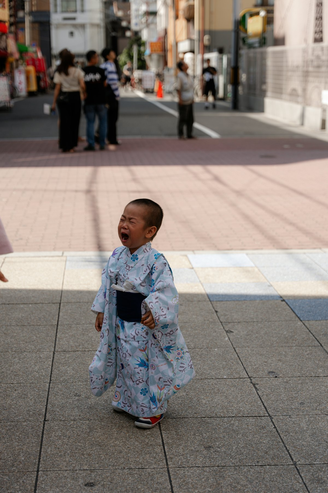
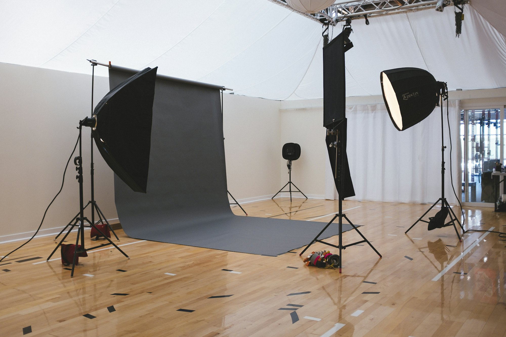

記念写真
お宮参り、七五三、成人式、入園入学卒業。

写真スタジオ 両国（墨田区亀沢）
お宮参り、成人式、七五三、入園入学卒業などの記念写真はぜひ両国のスタジオへ。建築写真や学校写真、音楽発表会などの出張撮影もいたします。
撮影メニュー
記念写真
お宮参り、七五三、成人式、入園入学卒業。
絞りf/16
写真はイメージです
仕事が終わった後に撮影したい方、七五三の写真を年賀状に使いたい方、履歴書の写真をきれいにしたい方。ご予約いただければ、できる限りご希望にお応えします。
お店のホームページに載せる商品写真や、毎年の誕生日・記念日の成長記録も。カメラマン平岡洋一が撮影します。

お宮参り、七五三、成人式、入園入学卒業。
オーディションやお仕事用の写真も。

かわいいペットとご一緒に撮影できます。

料金は現在のホームページの表示をもとにしています。
| ご予約 | お電話でどうぞ（外回りが多いため、なるべく携帯へ） |
|---|---|
| 携帯 | 090-3088-3991 |
撮影のご相談は、お電話またはメールでどうぞ。クレジットカードもご利用いただけます。